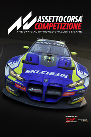

Assetto Corsa Competizione
Detalles
|  | |
| Tiempo de juego | No Jugado |
| Última actividad | Nunca |
| Añadido | 11/6/2024 14:41:31 |
| Modificado | 2/5/2025 1:34:32 |
| Estado de finalización | No Jugado |
| Librería | Playnite |
| Fuente | 1 TB EXT |
| Plataforma | PC (Windows) |
| Fecha de lanzamiento | 5/29/2019 |
| Puntuación de la Comunidad | 91 |
| Puntuación de la Crítica | 77 |
| Puntuación de usuario | |
| Género | Carreras Deportes Simuladores |
| Desarrollador | Kunos Simulazioni |
| Editor | 505 Games |
| Característica | Compat. Parcial Con Mando Compatible Con RV Jcj Jcj En LAN Jcj En Línea Multijugador Préstamo Familiar Un Jugador VR VR Gamepad VR Keyboard / Mouse VR Seated |
| Enlaces | Punto de encuentro Discusiones Guías Noticias Página de la tienda PCGamingWiki |
| Tag | Acceso anticipado Acción Ambientales Carreras Competitivos Conducción Cooperativos en línea Deportes Difíciles e-sports Modificables Multijugador Mundo abierto Para mando Primera persona Realistas RV Simulación Simulador de automóviles Un jugador |
Descripción
Las imágenes o tráileres podrían mostrar contenido que puede que aún no esté disponible. Este contenido, una vez esté disponible, será ofrecido a todos los poseedores de ACC sin coste adicional. Aquí podrás revisar nuestro plan completo de lanzamientos:

Assetto Corsa Competizione es el nuevo juego oficial de la Blancpain GT Series.
La excelente calidad de la simulación del juego te permitirá experimentar la auténtica atmósfera de un campeonato homologado por la FIA GT3, en el que te enfrentarás a circuitos, vehículos, equipos y pilotos oficiales. Todos ellos han sido recreados con un nivel de precisión nunca antes visto en ningún juego.
Las carreras de velocidad, resistencia y Spa 24 horas cobrarán vida con un nivel de realismo increíble, tanto en el modo para un jugador como en el multijugador.
Assetto Corsa Competizione incluirá la temporada 2018 de la Blancpain GT Series, así como también incluirá la temporada 2019, que se ofrecerá a modo de descarga gratuita durante el verano de 2019.
Assetto Corsa Competizione nace de la longeva experiencia de KUNOS Simulazioni y aprovecha el Unreal Engine 4 para ofrecer gráficos y condiciones climatológicas fotorrealistas, carreras nocturnas, animaciones capturadas del mundo real y grandes mejoras a nivel de modelos aerodinámicos y de ruedas. Todo esto le permite alcanzar un nuevo estándar en lo que respecta a inmersión y realismo al volante.
Diseñado para innovar, Assetto Corsa Competizione está pensado para promocionar el deporte electrónico y poner a los jugadores en el corazón de la Blancpain GT Series. Es una ocasión única para ponerse al volante de Ferraris, Lamborghinis, McLarens y muchos otros vehículos famosos de GT, todos ellos recreados con un increíble nivel de detalle.
SIMULACIÓN REALISTA
Assetto Corsa Competizione está diseñado para recrear, con la máxima fidelidad posible, el rendimiento y la experiencia de conducción de los vehículos reales de la Blancpain GT Series. Esto se consigue a través de un sofisticado modelo matemático que replica con precisión el agarre de las ruedas, los impactos aerodinámicos, los parámetros del motor, las suspensiones y los sistemas electrónicos que determinan el equilibrio del vehículo, así como el modo en el que influyen en la conducción los daños mecánicos del vehículo.
EFECTOS VISUALES Y GRÁFICOS DE NUEVA GENERACIÓN
El motor Unreal Engine 4 garantiza una recreación fotorrealista y precisa de los escenarios, los materiales de los vehículos y las condiciones climatológicas. Gracias a las grabaciones multicanal del sonido de coches GT reales, el juego consigue presentar entornos acústicos cautivadores y envolventes, además de efectos realistas del entorno.

ATENCIÓN A LOS DETALLES
Incluso los detalles secundarios están fielmente reproducidos para hacerte sentir toda la emoción de estar a los mandos de un coche de competición real. Puertas, limpiaparabrisas, faros, luces de competición, equipo de carrera y dispositivos de control tales como ABS, control de tracción, encendido del motor, unidad de control del motor... Todo está bajo el control del piloto, para asegurar el mejor rendimiento y ofrecer al jugador el control total del coche.
LOS CIRCUITOS MÁS REALES
Gracias a la tecnología de escaneado láser, todos los circuitos oficiales están recreados con la máxima precisión. Todas las curvas y todos los detalles son totalmente fieles a sus homólogos reales, para garantizar así una experiencia de juego lo más fiel posible a la realidad.

FUNCIONALIDAD MULTIJUGADOR AVANZADA
Un sistema de marcadores muy bien estructurado evaluará el rendimiento individual y el comportamiento al volante, con el fin de recompensar a los pilotos más virtuosos y de promover el juego limpio en las competiciones online. El sistema de emparejamientos se asegura de que compitas contra rivales de un nivel de habilidad similar y de que puedas encontrar fácilmente carreras online a las que unirte. Por su parte, los marcadores te permitirán comparar tu actuación en vueltas individuales con la de otros pilotos virtuales de todo el mundo que hayan usado el mismo coche, el mismo circuito y las mismas condiciones climatológicas.
ENVOLVENTE EXPERIENCIA PARA UN JUGADOR
Los modos Carrera, Campeonato y Juego libre ofrecen una experiencia de juego completa y personalizable. Además, gracias a los tutoriales y a los niveles de ayuda progresivos, podrás determinar la dificultad de tus rivales de la IA y la adaptar el control del vehículo a tus habilidades. Los eventos especiales te permitirán experimentar de primera mano los desafíos reales más destacables de la Blancpain GT Series.
COMPATIBLE CON HARDWARE DE GAMA ALTA
Assetto Corsa Competizione te asegura compatibilidad total con un amplio abanico de periféricos, desde mandos hasta volantes profesionales.
CAPTURA DE MOVIMIENTO PARA ANIMACIONES REALISTAS
La tecnología de captura de movimiento se usa para crear las animaciones más realistas posibles para mecánicos y pilotos y, de este modo, garantizar que el jugador se sumerja completamente en las carreras, en las paradas en boxes y en los cambios de piloto.
BLANCPAIN GT SERIES
Tras el éxito de la Blancpain Endurance Series, que no tardó en convertirse en la referencia mundial de GT tras su creación en 2011, la famosa fabricante de relojes suizos Blancpain y el SRO Motorsports Group decidieron, a finales de 2013, ampliar su colaboración con la Blancpain Sprint Series. Además, desde 2015, equipos y pilotos tienen la oportunidad de competir por el título general de la Blancpain GT Series. El resultado fueron parrillas de lo más variado al inicio de las carreras, con pilotos y equipos de GT de renombre. La Blancpain GT Series también vivió la llegada de muchos pilotos jóvenes y talentosos, convirtiéndose en un emblema de la competición de GT3.
Ahora que la Blancpain GT Series Sprint Cup y la Blancpain GT Series Endurance Cup comparten el mismo sistema de puntos y las mismas categorías de pilotos, la temporada de la Blancpain GT Series (de diez rondas, con cinco eventos de velocidad y cinco eventos de resistencia) corona a los pilotos más completos de GT.
El evento Blancpain GT Series Sprint Cup consta de dos carreras de una hora cada una, mientras que las carreras de la Blancpain GT Series Endurance Cup van desde eventos de tres horas hasta una carrera de 1000 kilómetros. Eso, sin contar las 24 Horas de Spa, una de las carreras de 24 horas más importantes del mundo.
Assetto Corsa Competizione es el nuevo juego oficial de la Blancpain GT Series.
La excelente calidad de la simulación del juego te permitirá experimentar la auténtica atmósfera de un campeonato homologado por la FIA GT3, en el que te enfrentarás a circuitos, vehículos, equipos y pilotos oficiales. Todos ellos han sido recreados con un nivel de precisión nunca antes visto en ningún juego.
Las carreras de velocidad, resistencia y Spa 24 horas cobrarán vida con un nivel de realismo increíble, tanto en el modo para un jugador como en el multijugador.
Assetto Corsa Competizione incluirá la temporada 2018 de la Blancpain GT Series, así como también incluirá la temporada 2019, que se ofrecerá a modo de descarga gratuita durante el verano de 2019.
Assetto Corsa Competizione nace de la longeva experiencia de KUNOS Simulazioni y aprovecha el Unreal Engine 4 para ofrecer gráficos y condiciones climatológicas fotorrealistas, carreras nocturnas, animaciones capturadas del mundo real y grandes mejoras a nivel de modelos aerodinámicos y de ruedas. Todo esto le permite alcanzar un nuevo estándar en lo que respecta a inmersión y realismo al volante.
Diseñado para innovar, Assetto Corsa Competizione está pensado para promocionar el deporte electrónico y poner a los jugadores en el corazón de la Blancpain GT Series. Es una ocasión única para ponerse al volante de Ferraris, Lamborghinis, McLarens y muchos otros vehículos famosos de GT, todos ellos recreados con un increíble nivel de detalle.
SIMULACIÓN REALISTA
Assetto Corsa Competizione está diseñado para recrear, con la máxima fidelidad posible, el rendimiento y la experiencia de conducción de los vehículos reales de la Blancpain GT Series. Esto se consigue a través de un sofisticado modelo matemático que replica con precisión el agarre de las ruedas, los impactos aerodinámicos, los parámetros del motor, las suspensiones y los sistemas electrónicos que determinan el equilibrio del vehículo, así como el modo en el que influyen en la conducción los daños mecánicos del vehículo.
EFECTOS VISUALES Y GRÁFICOS DE NUEVA GENERACIÓN
El motor Unreal Engine 4 garantiza una recreación fotorrealista y precisa de los escenarios, los materiales de los vehículos y las condiciones climatológicas. Gracias a las grabaciones multicanal del sonido de coches GT reales, el juego consigue presentar entornos acústicos cautivadores y envolventes, además de efectos realistas del entorno.
ATENCIÓN A LOS DETALLES
Incluso los detalles secundarios están fielmente reproducidos para hacerte sentir toda la emoción de estar a los mandos de un coche de competición real. Puertas, limpiaparabrisas, faros, luces de competición, equipo de carrera y dispositivos de control tales como ABS, control de tracción, encendido del motor, unidad de control del motor... Todo está bajo el control del piloto, para asegurar el mejor rendimiento y ofrecer al jugador el control total del coche.
LOS CIRCUITOS MÁS REALES
Gracias a la tecnología de escaneado láser, todos los circuitos oficiales están recreados con la máxima precisión. Todas las curvas y todos los detalles son totalmente fieles a sus homólogos reales, para garantizar así una experiencia de juego lo más fiel posible a la realidad.
FUNCIONALIDAD MULTIJUGADOR AVANZADA
Un sistema de marcadores muy bien estructurado evaluará el rendimiento individual y el comportamiento al volante, con el fin de recompensar a los pilotos más virtuosos y de promover el juego limpio en las competiciones online. El sistema de emparejamientos se asegura de que compitas contra rivales de un nivel de habilidad similar y de que puedas encontrar fácilmente carreras online a las que unirte. Por su parte, los marcadores te permitirán comparar tu actuación en vueltas individuales con la de otros pilotos virtuales de todo el mundo que hayan usado el mismo coche, el mismo circuito y las mismas condiciones climatológicas.
ENVOLVENTE EXPERIENCIA PARA UN JUGADOR
Los modos Carrera, Campeonato y Juego libre ofrecen una experiencia de juego completa y personalizable. Además, gracias a los tutoriales y a los niveles de ayuda progresivos, podrás determinar la dificultad de tus rivales de la IA y la adaptar el control del vehículo a tus habilidades. Los eventos especiales te permitirán experimentar de primera mano los desafíos reales más destacables de la Blancpain GT Series.
COMPATIBLE CON HARDWARE DE GAMA ALTA
Assetto Corsa Competizione te asegura compatibilidad total con un amplio abanico de periféricos, desde mandos hasta volantes profesionales.
CAPTURA DE MOVIMIENTO PARA ANIMACIONES REALISTAS
La tecnología de captura de movimiento se usa para crear las animaciones más realistas posibles para mecánicos y pilotos y, de este modo, garantizar que el jugador se sumerja completamente en las carreras, en las paradas en boxes y en los cambios de piloto.
BLANCPAIN GT SERIES
Tras el éxito de la Blancpain Endurance Series, que no tardó en convertirse en la referencia mundial de GT tras su creación en 2011, la famosa fabricante de relojes suizos Blancpain y el SRO Motorsports Group decidieron, a finales de 2013, ampliar su colaboración con la Blancpain Sprint Series. Además, desde 2015, equipos y pilotos tienen la oportunidad de competir por el título general de la Blancpain GT Series. El resultado fueron parrillas de lo más variado al inicio de las carreras, con pilotos y equipos de GT de renombre. La Blancpain GT Series también vivió la llegada de muchos pilotos jóvenes y talentosos, convirtiéndose en un emblema de la competición de GT3.
Ahora que la Blancpain GT Series Sprint Cup y la Blancpain GT Series Endurance Cup comparten el mismo sistema de puntos y las mismas categorías de pilotos, la temporada de la Blancpain GT Series (de diez rondas, con cinco eventos de velocidad y cinco eventos de resistencia) corona a los pilotos más completos de GT.
El evento Blancpain GT Series Sprint Cup consta de dos carreras de una hora cada una, mientras que las carreras de la Blancpain GT Series Endurance Cup van desde eventos de tres horas hasta una carrera de 1000 kilómetros. Eso, sin contar las 24 Horas de Spa, una de las carreras de 24 horas más importantes del mundo.